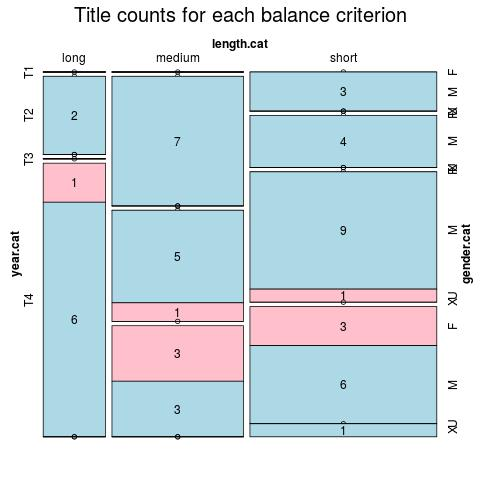

Click on a column heading to sort. Click on a text identifier to read the text (may not work in older browsers).
| Identifier | Encoding | Pages | Words | (Size) | Date (Slot) | Title | Author | Sex | Reprints |
|---|---|---|---|---|---|---|---|---|---|
| ROM001_Anonim_MCP_ROSCAN_HAIDUCUL | eltec-1 | 128 | 9817 | (medium) !! | 1894 (T3) | Roșcan Haiducul. Nuvelă ilustrată cu două gravuri: ELTeC edition | Anonymous | U | low |
| ROM002_BalanescuSimion_BLESTEMUL | eltec-1 | 67 | 8705 | (short) | 1894 (T3) | Blestemul: Ediție ELTeC | Bălănescu, Simion(?-?) | M | low |
| ROM003_BalanescuSimion_SFARSITUL_BLESTEMULUI | eltec-1 | 128 | 21505 | (short) | 1895 (T3) | Sfârșitul blestemului : ediție ELTeC | Bălănescu, Simeon (?-?) | M | low |
| ROM004_DumbravaBucura_HAIDUCUL | eltec-1 | 507 | 124789 | (long) | ???? (T4) | Haiducul : ediție ELTeC | Dumbravă, Bucura (Fany Seculici/Fanny Szeculicz)(1868-1926) | F | high |
| ROM005_MacriPanait_GHITA_CATANUTA | eltec-1 | 95 | 28565 | (short) | ???? (T3) | Ghiță Cătănuță, căpitan de haiduci : ediție ELTeC | Macri, Panait (1863-1932) | M | low |
| ROM006_PopescuND_IancuJianuZapciu | eltec-1 | 121 | 32240 | (short) | ???? (T2) | Iancu Jianu, zapciu de plasă. Nuvelă originală. Adăogită, revăzută, corectată și ilustrată cu patru gravuri : ediție ELTeC | Popescu, N.D. (1843-1921) | M | high |
| ROM007_PopescuND_IancuJianuCapitan | eltec-1 | 143 | 35873 | (short) | ???? (T2) | Iancu Jianu, căpitan de haiduci. Nuvelă originală: ediție ELTeC | Popescu, N.D. (1843-1921) | M | high |
| ROM008_PopescuND_BUJOR_HAIDUCUL | eltec-1 | 136 | 31921 | (short) | ???? (T3) | Boierii haiduci. Nuvela originală compusă de N.D. Popescu cu patru ilustrațiuni: ediție ELTeC | Popescu, N.D. (1843-1921) | M | high |
| ROM009_MacedonskiA_Thalassa | eltec-1 | 70 | 28944 | (short) | ???? (T4) | THALASSA: ediție ELTeC | Macedonski, Alexandru (1854-1920) | M | low |
| ROM010_VlahutaA_Dan | eltec-1 | 199 | 63856 | (medium) | ???? (T3) | Dan: ediție ELTeC | Vlahuță, Alexandru (1858-1919) | M | high |
| ROM011_GrandeaG_Fulga | eltec-1 | 97 | 29817 | (short) | ???? (T2) | Fulga sau ideal și real : ediție ELTeC | Grandea, Grigore H. (1843-1897) | M | high |
| ROM012_GrandeaG_Vlasia | eltec-1 | 167 | 56691 | (medium) | ???? (T3) | Vlăsia sau ciocoii noi: ediție ELTeC | Grandea, Grigore H. (1843-1897) | M | low |
| ROM013_IonescuR_LaGuraSobei | eltec-1 | 235 | 56507 | (medium) | ???? (T2) | La Gura sobei: ediție ELTeC | Ionescu, Radu (1834-l872) | M | low |
| ROM014_IonescuR_CatastihulAmorului | eltec-1 | 129 | 26030 | (short) | ???? (T2) | Catastihul amorului: ediție ELTeC | Ionescu, Radu (1834-l872) | M | low |
| ROM015_IonescuR_DonJuaniiBucuresti | eltec-1 | 67 | 22860 | (short) | ???? (T2) | Don Juanii din București: ediție ELTeC | Ionescu, Radu (1834-l872) | M | low |
| ROM016_BolintineanuD_Manoil | eltec-1 | 120 | 36282 | (short) | ???? (T1) | Manoil: ediție ELTeC | Bolintineanu, Dimitrie (1819-1872) | M | high |
| ROM017_BolintineanuD_Elena | eltec-1 | 202 | 65702 | (medium) | ???? (T2) | Elena. Roman original de datine politic filosofic: ediție ELTeC | Bolintineanu, Dimitrie (1819-1872) | M | high |
| ROM018_BolintineanuD_DoritoriiNebuni | eltec-1 | 183 | 60232 | (medium) | ???? (T2) | Doritorii nebuni: ediție ELTeC | Bolintineanu, Dimitrie (1819-1872) | M | low |
| ROM019_VDemetrius_MateiDumbarau | eltec-1 | 164 | 38783 | (short) | 1920 (T4) | Matei Dumbărău. Roman: ediție ELTeC | Demetrius, V. (1878-1942) | M | low |
| ROM020_VDemetrius_OrasulBucuriei | eltec-1 | 189 | 42607 | (short) | 1920 (1920) (T4) | Oraşul bucuriei. Roman: ediție ELTeC | Demetrius, V. (1878-1942) | M | low |
| ROM021_VDemetrius_PacatulRabinului | eltec-1 | 117 | 23575 | (short) | 1920 (1920) (T4) | Păcatul Rabinului. Roman: ediție ELTeC | Demetrius, V. (1878-1942) | M | low |
| ROM022_PanaitMacri_HaiduculTandura | eltec-1 | 116 | 29807 | (short) | 1930 (1894) (T3) | HAIDUCUL TANDURA. SCRIERE ORIGINAL, CU ADAUSE SI MODIFICARI: ediție ELTeC | MACRI, P. (1863-1932) | M | low |
| ROM023_IghelI_TilharulFulger | eltec-1 | 142 | 23370 | (short) | ???? (T3) | Tîlharul Fulger. Roman criminal : ediție ELTeC | Ighel, Ilie (1870-1938) | M | low |
| ROM024 | eltec-1 | 144 | 35076 | (short) | ???? (T3) | Bostan. Haiduc de peste Milcov : ediție ELTeC | Macri, P. Panait (1863-1932) | M | low |
| ROM024_DumbravaB_Pandurul | eltec-1 | 381 | 111825 | (medium) !! | ???? (T4) | Pandurul. Ediția VIII-a : ediție ELTeC | Dumbravă, Bucura (1868-1926) | F | low |
| ROM025_Bujoreanu_MistereDinBucuresti | eltec-1 | 435 | 150879 | (medium) !! | ???? (T2) | Mistere din București : ediție ELTeC | Bujoreanu, Ioan M. (1834-1899) | M | low |